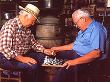
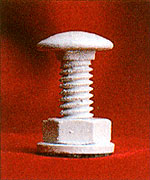
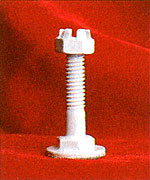
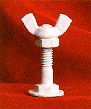
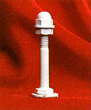
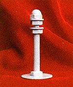
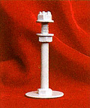

Last year at this time I found myself in the frustrating position of needing (very badly) to come up with a Christmas gift that was both charming and cheap. At first, those two goals seemed mutually exclusive . . . but then I recalled an attractive and modernistic chess set that an inventive friend had once put together. That memory inspired me to get down to dealing with the nuts and bolts of my gift-giving problem, and after investing only three hours (including the time I spent shopping for the necessary ingredients) and $10, I'd fashioned an attractive and durable chess set similar to the one pictured here.
If you can thread a nut onto a bolt, squeeze a drop of glue from a tube, and point the nozzle of a can of spray paint in the right direction, you have all the skills necessary to duplicate my chess pieces-or to come up with an original set of your own design. (You don't even need to know how to play the game in order to manufacture one!)
What's more, that $10 cost I mentioned assumes that you'll run out-as I did-and buy everything you need at your local retail hardware store. But by shopping around for the best prices, raiding your toolbox or workshop for any usable materials you might already have on hand (or by redesigning the chess pieces to accommodate the materials you have), you should be able to complete this unique little craft project for a fraction of what I spent on mine.
The chess pieces pictured here were assembled from common 1/4"-diameter nuts, bolts, and washers (available at all hardware stores, most discount department stores, and some supermarkets). Other than the hardware, all you'll need is a tube of fast-drying, Supertype glue and two cans of spray paint in contrasting colors.
The actual assembly of the chess set requires only about an hour, but you'll have to allow time for the glue to cure thoroughly before applying the paint. Therefore, if you're not in too much of a hurry to come up with a gift, it's a good idea to assemble the pieces one day, allow them to rest overnight, and apply the paint the following morning.
We'll begin by fabricating the most common chess piece, then work our way up the ladder of royalty from there.
You'll need to make 16 pawns, each identical to the other. But take heart, because they're a breeze to assemble. Each piece consists of an inch-long carriage bolt (the kind with threads all the way to the rounded head), a hex nut (it has six sides), and a flat washer.
To turn that hardware into a pawn, simply thread the hex nut onto the end of the bolt just far enough to allow a flat washer to rest against the nut and lie flush with the end of the bolt. (The washer will form a stable base for the piece.) Now remove the washer and drop a spot of glue onto the bolt's threads just above the nut, glue the washer in place-and you're on the road to having a custom chess set.
You'll need to fabricate four identical rookseach one requiring a 1-1/2"long machine bolt (the kind that's threaded only partway up the shaft; it's called a hex-head cap screw in some hardware catalogs), a castle nut (a hex nut with slots across its top), and a flat washer. You may not be able to find castle nuts in the standard National Coarse thread, and if this is the case, simply use fine-thread machine bolts to match the available castellated nuts.
Thread a castle nut far enough onto the bolt to allow about 1/4" of bolt to project above the top of the nut, and fix it in place with a dab of glue. Now place a flat washer on your workbench, center the bolt's head on the washer, and glue the two together to form a stable base.
Each of the four knights will require a 1-1/2"-long machine bolt, a hex nut, a wing nut, and a flat washer.
Thread the hex nut far enough onto the bolt to get it temporarily out of the way. Now thread the wing nut down until the top of the nut (not the wings) is flush with the end of the bolt. Place a drop of glue on the bolt's threads just beneath the wing nut, and back the hex nut up until it makes contact with the base of the wing nut. Glue a flat washer to the head of the bolt for a base, and kiss this one good knight.
Each of the four bishops requires a 2"-long machine bolt, a hex nut, a cap nut (which is a hex nut with a rounded head; also known as an acorn nut), and two flat washers. Begin by running the hex nut about a third of the way down the bolt's threaded portion to get it out of the way for the next operation. Now glue a flat washer to the base of a cap nut (being careful not to get any glue on the nut's threads), allow the glue to dry for a minute or so, then thread the washer and cap nut firmly onto the end of the bolt. Next, place a drop of glue on the bolt's threads just below the washer, then back the hex nut up the bolt until it's snug against the washer. Finally, glue the second flat washer to the bolt's head to form a base.
Construction of each of the two royal ladies commands a 2-1/2"-long machine bolt, a cap nut, two hex nuts, two flat washers, and a fender washer (an oversized flat washer).
Begin your first queen by turning a hex nut as far as it will go down the threads of the machine bolt. Now drop a speck of glue onto the threads just above the hex nut and quickly place a flat washer atop the nut so that the glue secures both nut and washer to the bolt. Next, thread a second hex nut down to about a quarter of an inch above the first flat washer, drop the second flat washer in place atop the second nut, and screw the cap nut snugly onto the end of the bolt. Now place a drop of glue on the threads on both sides of the second flat washer and back the second hex nut up the bolt until it holds the washer hard against the cap nut. Glue a fender washer to the bolt's head for a stable base, and you're ready to move on to His Majesty.
Each of the two kings requires a 2-1/2"-long machine bolt, a castle nut, a hex nut, a fender washer, and two flat washers.
To assemble a king, thread a hex nut as far onto a machine bolt as it will go. Drop a spot of glue onto the threads just above the hex nut-then quickly drop a flat washer onto the nut before the glue has time to dry (sound familiar?). Next, glue the second flat washer to the base of the castle nut (again, being careful to keep the nut's threads clean), allow the glue a few seconds to dry, then screw the castle nut and washer onto the end of the bolt and glue them in place to form the king's crown. Glue a fender washer to the head of the bolt and you've got a king. Repeat the above procedure to create the opposing king, and your chess set is ready to receive the finishing touches.
With the assembly work completed, it's time to divide the 32 pieces of your chess set into two opposing sides-each containing one king, one queen, two bishops, two knights, two rooks, and eight pawns.
Before applying the paint, check the parts of each of the pieces for tightness, and dab on more glue where needed. When the glue is dry, wipe each chess piece with a clean, soft cloth to remove any body oils and grime that may have accumulated, then spray-paint the two opposing teams contrasting colors. (If you want to be traditional, go with ivory and black; if you want to save money, use whatever colors you have on hand . . . within the realm of good taste, of course.)
These days, the meaning behind our traditional gift-giving occasions is too often marred and obscured by the impersonality of the mass-produced commercial products we give and receive. Consequently, no storebought gewgaw-no matter its cost or gloss-can express sincere caring as well as does a gift you took the time and patience to create with your own hands.
Checkmate.
|
 |
 |
 |
|
 |
 |
 |
|
 |
|
|